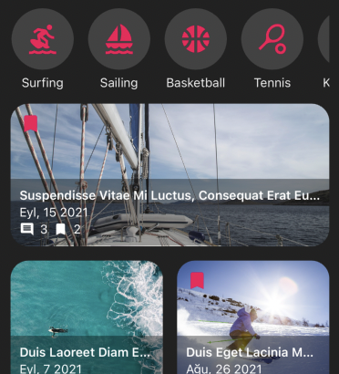
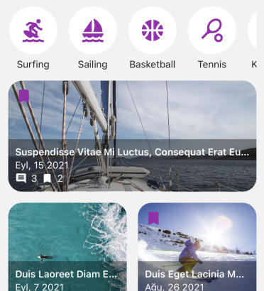
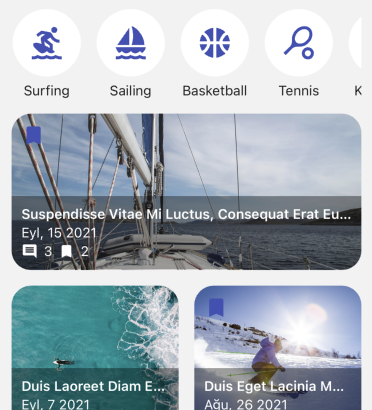
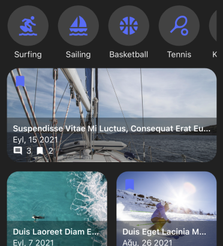
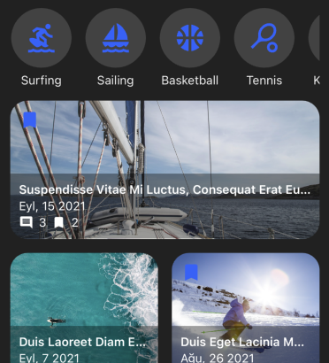
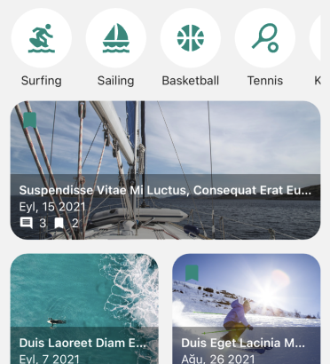
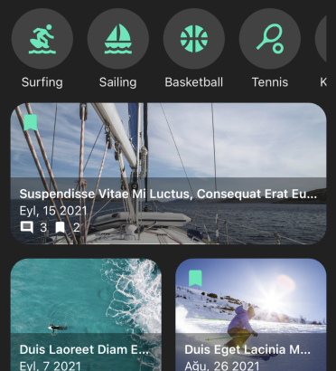
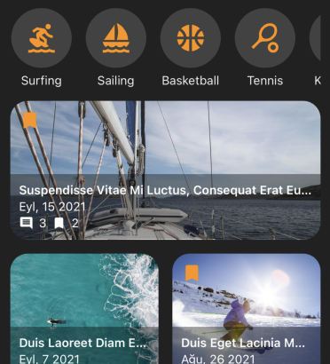
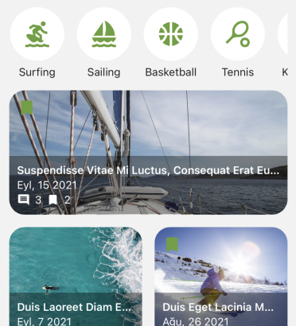

“Blog App UI Template for Flutter” Documentation by “Ahmet Zeki Eymür” v1.0
“Blog App UI Template for Flutter”
Created: 12/18/2022
By: Ahmet Zeki Eymür
Email: azeymur@gmail.com
Thank you for purchasing my item. If you have any questions that are beyond the scope of this help file, please feel free to email via my user page contact form here. Thanks so much!
Table of Contents
- Introduction
- Android Customization
- Ios Customization
- Common Settings
- Translation
- Color Themes
- Removing Mock Service
- More Help
Introduction - top
'Blog App UI Template for Flutter' is a user interface (UI) template made using Flutter.
Flutter is an open source framework by Google for building multi-platform applications from a single codebase.
You can get Flutter from the following address:
https://docs.flutter.dev/get-started/install
There are tutorials at this address that explain how to setup Flutter step by step for different operating systems.
You can use any text editor while developing an application with Flutter.
However, I recommend you to use Visual Studio Code.
VS Code is a lightweight editor and has useful plugins.
You can get the latest stable version from the following address:
https://code.visualstudio.com
After the installation is complete, start VS Code and follow the steps below.
- Click the View > Command Palette item in the pull-down menu.
- Type "install", and select Extensions: Install Extensions.
- Type “flutter” in the search field, select Flutter then click Install. This also installs the required Dart plugin.
I also list some plugins that I find useful below. You don't have to install them, but I recommend.
- Awesome Flutter Snippets / Neevash Ramdial
- bloc / Felix Angelov
- Bracket Pair Colorization Toggler / Dzhavat Ushev
After the installation is complete, extract the forbuyers.zip folder downloaded from CodeCanyon. You will see two folders:
- document
- blog_template
There is a mock data source and service in the project. So you can run the application immediately to test without doing anything. Start the VS Code and follow the steps below.
- Invoke File > Open Folder.
- Select the folder of the Flutter project (blog_template).
- Select the pubspec.yaml file in the Explorer panel.
- Click the Get Packages button in the upper right corner.
- Invoke View > Command Palette and execute Flutter: Select Device command.
- Select a device from theDevice Selector
- Select any dart file in the Explorer panel then invoke Run > Start Debugging or press F5.
{kind=link}
Android Customization - top
Some tasks that you need to do before publishing your Android applications are explained here.
App Manifest - top
Navigate to the 'blog_template/android/app/src/main/AndroidManifest.xml' file and review the following values:
Application Name - top
Update the application tag’s android:label attribute to reflect the name your want.
<manifest ...>
<application
android:label="Blog Template"
...>
...
</application>
</manifest>
Application Icon - top
In the blog_template/android/app/src/main/res/ directory, place your icon files in folders named using
configuration qualifiers.
Then update the application tag’s 'android:icon' attribute to reference icons from the previous step.
<manifest ...>
<application
android:icon="@mipmap/ic_launcher"
...>
...
</application>
</manifest>
See Adding a Launcher Icon for more info.
App Permissions - top
If your app requests app permissions, you must declare these permissions in your app's manifest file.
For example, an app that needs the internet access the internet has this line in AndroidManifest.xml:
<manifest ...>
uses-permission android:name="android.permission.INTERNET"/>
<application ...>
...
</application>
</manifest>
See Permissions on Anroid for more info.
{kind=link}
Gradle Build Configuration - top
Open the 'blog_template/android/app/build.gradle' file in the Explorer panel and review the following values:
Application Id - topEvery Android app has a unique application id. You should specify your app's id in the module's build.gradle file. Your application id must be the same as your application id in the Play Store. For example;
android {
defaultConfig {
applicationId = "com.example.blog_template"
...
}
...
}
The naming rules for the application id are a bit more restrictive.
See Set the application ID for more info.
{kind=link}
Ios Customization - top
Some tasks that you need to do before publishing your iOS application are explained here.
Xcode Project Settings - top
Open the 'blog_template/ios/Runner.xcworkspace' file in the XCode. To view your app’s settings, select the Runner target in the Xcode navigator.
Application Name - topEnter the name of your application to 'Display Name'.
Application Icon - topSelect the 'Assets.xcassets' file in the Xcode project navigator. Update the placeholder icons with your own app icons.
Application Id - topEnter the application id you registered on App Store Connect to 'Bundle Identifier'.
See Review Xcode project settings for more info.
{kind=link}
{kind=link}
Common Settings - top
Common tasks that you need to do before publishing your Android & iOS application are explained here.
Settings In The "pubspec.yaml" File - top
Navigate to the 'blog_template/pubspec.yaml' and review the following lines:
Verison and Build Numbers - top
The version number is three numbers separated by dots, followed by an optional build number, separated by a +. To change it, update the following line:
version: 1.0.0+1Splash Screen - top
Go to the following section in the "pubspec.yaml" file:
flutter_native_splash:Use color to set the background of your splash screen to a solid color.
color: "#43A047"The image parameter allows you to specify an image used in the splash screen. It must be a png file and should be sized for 4x pixel density and copied to the asset folder.
image: assets/splash.pngUse following parameters to set background color and image of the splash screen, when the device is in dark mode.
color_dark: "#388E3C" image_dark: assets/splash.pngAfter editing these settings, run the following command in the terminal:
flutter pub run flutter_native_splash:createWhen the package finishes running, your splash screen is ready. See flutter_native_splash for more info.
Translation - top
The texts in the project are not hard coded. All strings are added to following file:
blog_template/lib/localization/locals.dart
Changing the value of a text in this file will have an effect on the entire application.
static const _localizedValues = <String, Map<String, String>>{
'en': {
'Home': 'Home',
'MyAccount': 'My Account',
'AccountDetails': 'Account Details',
'Info': 'Info',
'EditPhotoTapped': 'Edit photo tapped.',
...
The Locals class includes all of its translations directly in per language Maps. You can translate the application to another language by changing the text. You must not change the keys (left side). It is also possible to support more than one language in your application. Here’s some code that sets the app’s language to Spanish.
blog_template/lib/localization/locals.dart
...
static const _localizedValues = <String, Map<String, String>>{
'en': {
'title': 'Hello World',
},
'es': {
'title': 'Hola Mundo',
},
};
...
blog_template/lib/main.dart
...
supportedLocales: const [
Locale('en', ''), // English, no country code
Locale('es', ''), //Spanish, no country code
],
...
See Alternative internationalization workflows for more info.
Color Themes - top
The project has 14 color themes created using the Material color palette. Each theme supports both light and dark mode. Color themes are defined in the "blog_template/lib/app_theme.dart" file. Which theme to use is specified in the following file: "blog_template/lib/main.dart" You can use the color theme you want by changing the line below.
...
supportedLocales: const [
theme: AppTheme.greenLightTheme, // color theme for light mode
darkTheme: AppTheme.greenDarkTheme, // color theme for dark mode
],
Only the colors in the material palette are used in the themes. Normal tones are used for light mode, and brighter tones starting with 'A' are used for dark mode. All color themes in the project are listed below:
| Light Mode | Dark Mode | ||
|---|---|---|---|
| redLightTheme | pinkLightTheme | redDarkTheme | pinkDarkTheme |
|  | |||
| purpleLightTheme | deepPurpleLightTheme | purpleDarkTheme | deepPurpleDarkTheme |
|  | |||
| indigoLightTheme | blueLightTheme | indigoDarkTheme | blueDarkTheme |
|  |  |  | |
| cyanLightTheme | tealLightTheme | cyanDarkTheme | tealDarkTheme |
|  |  | ||
| greenLightTheme | limeLightTheme | greenDarkTheme | limeDarkTheme |
 |
|||
| amberLightTheme | orangeLightTheme | amberDarkTheme | orangeDarkTheme |
|  | |||
| deepOrangeLightTheme | lightGreenLightTheme | deepOrangeDarkTheme | lightGreenLightTheme |
|  | |||
Removing Mock Service - top
The project has a mock service and data source for testing. When you add your own service to the project, you will no longer need this mock service and data source.
You can remove the mock data source from your project by deleting the following folder:
blog_template\lib\datastores\mock
To remove the fake service from your project, delete the following file:
blog_template\lib\services\service.dart
Finally, you need to delete the following lines from the 'locator.dart' file:
blog_template\lib\locator.dart
getIt.registerSingleton(BookmarkDataStore()); getIt.registerSingleton (CategoryDataStore()); getIt.registerSingleton (CommentDataStore()); getIt.registerSingleton (PostDataStore()); getIt.registerSingleton (UserDataStore()); getIt.registerSingleton (KeywordDataStore()); getIt.registerFactory(() => Service());
More Help - top
If you need more help publishing Android and iOS apps, follow the links below.
Once again, thank you so much for purchasing this product. As I said at the beginning, I'd be glad to help you if you have any questions relating to this product. No guarantees, but I'll do my best to assist. If you have a more general question relating to the items on CodeCanyon, you might consider visiting the forums and asking your question in the "Item Discussion" section.
Ahmet Zeki Eymür